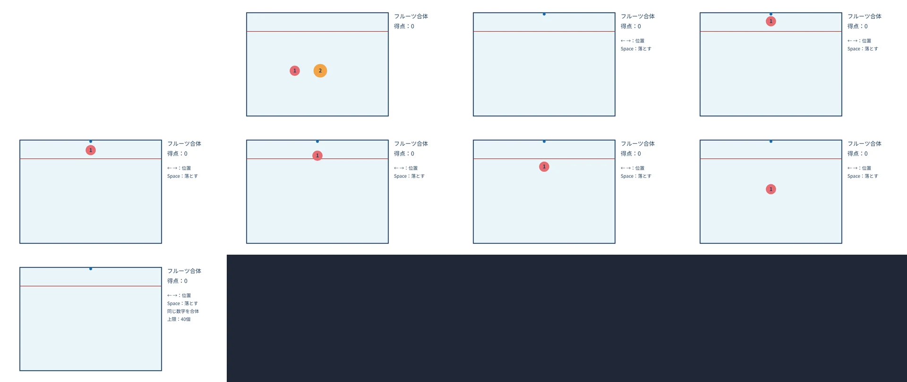
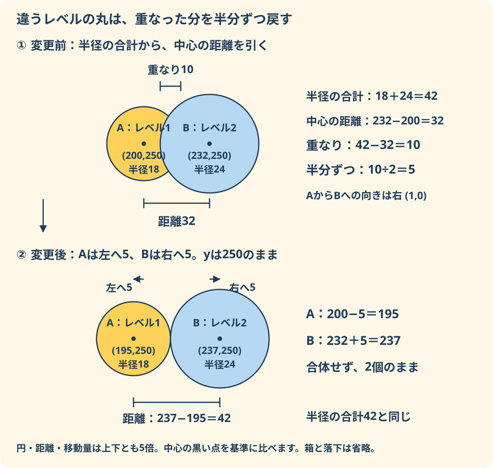
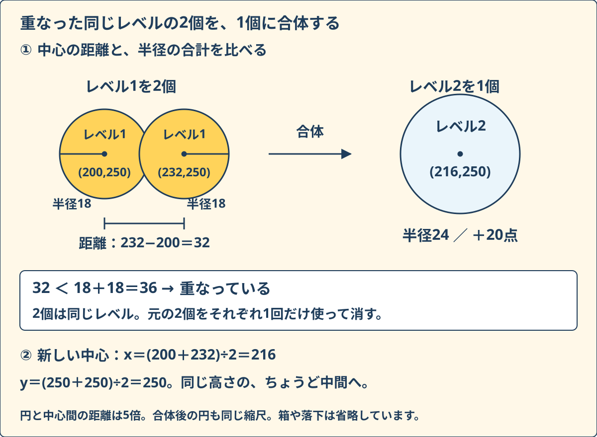

フルーツ合体パズルを作る
丸いフルーツを落とし、同じ数字を合体させます。
始める前に
ZIPを展開してできたフォルダーでindex.htmlを開きます。ZIPにはひな型の3ファイルが入っています。
WindowsでZIPを展開する（動画）
作業用フォルダーのscript.jsを編集します。各ステップで保存し、index.htmlを再読み込みしてください。
クラスはデータと処理の設計図です。constructorはnewで作るときに呼ばれ、thisは作られた一つ一つのインスタンスを指します。
ステップ 1：フルーツを描く
このステップの見本を図で見る
level=0; radii[0]=18
半径18の丸に1を表示
level=1; radii[1]=24
半径24の丸に2を表示
ゲーム画面とコードの前後を見る

このステップの見本
この行を足す前 変わったコードの一例（script.js）
ctx.fillStyle = colors[this.level]; ctx.beginPath(); ctx.arc(this.x, this.y, this.radius, 0, Math.PI * 2); ctx.fill();
見本で確かめること
数字1と2の丸が表示されます。
目標
クラスを使って大きさの違う丸を表示します。
書く場所と置き換えるコード
果物の大きさと色を決める
作業用 script.js の start() の前に追加します。
目印
function start() {追加するコード
const radii = [18, 24, 31, 39, 48, 60];
const colors = ["#e76c72", "#f3a447", "#f7d65e", "#84b86a", "#75b8dc", "#bb86c8"];radii は半径、colors は色の一覧です。番号0から対応しており、レベル0の半径は18です。
箱と入力の設定を用意する
色の配列の次の行の下に追加します。
目印
const colors = ["#e76c72", "#f3a447", "#f7d65e", "#84b86a", "#75b8dc", "#bb86c8"];追加するコード
const leftWall = 70, rightWall = 570, floorY = 410, dangerY = 110;
const maxFruits = 40;
const keys = {};左右の壁、床、上限線の座標を決めます。果物は最大40個、keys はキーの状態を入れる場所です。
果物の形を作る
keys の次の行の下に追加します。
目印
const keys = {};追加するコード
class Fruit {
constructor(x, y, level) {
this.x = x; this.y = y; this.level = level;
this.radius = radii[level]; this.vx = 0; this.vy = 0; this.age = 0;
}
}class Fruit は果物の値と動作の形です。constructor は new Fruit() で1個を作るときに動きます。this はその実体、x と y は中心、vx と vy は横と縦の速さ、age は作られてからの更新回数です。半径はレベルから選びます。
果物を丸く描く
Fruit の初期設定の後、クラスの閉じ波括弧の前に追加します。
置き換える範囲
this.radius = radii[level]; this.vx = 0; this.vy = 0; this.age = 0;
}
}置き換えるコード
this.radius = radii[level]; this.vx = 0; this.vy = 0; this.age = 0;
}
draw() {
ctx.fillStyle = colors[this.level]; ctx.beginPath(); ctx.arc(this.x, this.y, this.radius, 0, Math.PI * 2); ctx.fill();
}
}draw() はクラス内の動作、つまりメソッドです。レベルの色を選び、中心と半径から円を描きます。Math.PI * 2 は一周の角度です。
果物の番号を描く
Fruit.draw() で円を描く次の行の下に追加します。
目印
ctx.fillStyle = colors[this.level]; ctx.beginPath(); ctx.arc(this.x, this.y, this.radius, 0, Math.PI * 2); ctx.fill();追加するコード
ctx.fillStyle = "#1f3d5b"; ctx.font = "bold 18px sans-serif"; ctx.textAlign = "center";
ctx.fillText(String(this.level + 1), this.x, this.y + 6); ctx.textAlign = "left";レベルは0から始まるので1を足して番号を表示し、文字の位置合わせを左に戻します。
ゲーム全体の形を作る
start() の前に追加します。
目印
function start() {追加するコード
class Game {
constructor() {
this.fruits = []; this.aim = 320; this.nextLevel = 0; this.cooldown = 0;
this.score = 0; this.state = "playing"; this.dangerFrames = 0;
}
}fruits は果物の配列、aim は落とす横位置、nextLevel は次の果物のレベルです。cooldown は次を落とすまでの待ち、score は得点です。state と dangerFrames はゲームの状態と上限線の判定に使います。
果物を落とす処理を用意する
Game の初期設定の後、クラスの閉じ波括弧の前に追加します。
置き換える範囲
this.score = 0; this.state = "playing"; this.dangerFrames = 0;
}
}置き換えるコード
this.score = 0; this.state = "playing"; this.dangerFrames = 0;
}
drop() {
if (this.state !== "playing" || this.cooldown > 0 || this.fruits.length >= maxFruits) return;
this.fruits.push(new Fruit(this.aim, 75, this.nextLevel));
this.nextLevel = Math.floor(Math.random() * 2); this.cooldown = 30;
}
}プレイ中で待ち時間がなく、個数に余裕があれば果物を作ります。次のレベルは0か1から選び、30回分の待ちを設定します。この段階ではまだ入力から呼びません。
箱を描く
Game.drop() の後、クラスの閉じ波括弧の前に追加します。
置き換える範囲
this.nextLevel = Math.floor(Math.random() * 2); this.cooldown = 30;
}
}置き換えるコード
this.nextLevel = Math.floor(Math.random() * 2); this.cooldown = 30;
}
draw() {
ctx.fillStyle = "#eaf5fb"; ctx.fillRect(leftWall, 45, rightWall - leftWall, floorY - 45);
ctx.strokeStyle = "#1f3d5b"; ctx.lineWidth = 3; ctx.strokeRect(leftWall, 45, rightWall - leftWall, floorY - 45);
ctx.fillStyle = "#a53737"; ctx.fillRect(leftWall, dangerY, rightWall - leftWall, 2);
}
}壁と床の座標から箱を描き、赤い上限線を重ねます。
果物と得点を描く
Game.draw() の上限線を描く次の行の下に追加します。
目印
ctx.fillStyle = "#a53737"; ctx.fillRect(leftWall, dangerY, rightWall - leftWall, 2);追加するコード
this.fruits.forEach(fruit => fruit.draw());
ctx.fillStyle = "#1f3d5b"; ctx.font = "20px sans-serif";
ctx.fillText("フルーツ合体", 590, 65); ctx.fillText("得点：" + this.score, 590, 100);
ctx.font = "16px sans-serif";forEach で果物それぞれの draw() を呼び、名前と得点を表示します。
ゲームを入れる変数を用意する
Game の閉じ波括弧と start() の間に追加します。
置き換える範囲
}
function start() {置き換えるコード
}
let game;
function start() {ゲームの実体を game に入れます。
ゲームと見本の果物を作る
start() の開き波括弧の下に追加します。
目印
function start() {追加するコード
for (const key of Object.keys(keys)) keys[key] = false;
game = new Game();
game.fruits.push(new Fruit(240, 250, 0), new Fruit(330, 250, 1));キーを戻してゲームの実体を作り、見本の果物を2個入れます。new Fruit() が作る一つ一つをインスタンスと呼びます。
ゲームを描く
外側の draw() の次の行の下に追加します。
目印
ctx.clearRect(0, 0, canvas.width, canvas.height);追加するコード
game.draw();画面を消した後、ゲームの描画メソッドを呼びます。
保存して作業用 index.html を再読み込みし、箱と大きさの違う果物2個、得点が表示されることを確かめます。
保存後の確認
保存してゲーム画面を更新する（動画）
index.html を再読み込みします。数字1と2の丸が表示されます。 この段階の見本を開く
小さな練習
レベル0の半径はradiiの先頭のいくつですか。
練習の答え
18です。
ステップ 2：落下と壁を作る
このステップの見本を図で見る
このステップの見本
この行を足す前 変わったコードの一例（script.js）
if (fruit.x - fruit.radius < leftWall) { fruit.x = leftWall + fruit.radius; fruit.vx = Math.abs(fruit.vx) * 0.25; }
見本で確かめること
Spaceで果物が落ち、床の上に止まります。
目標
重力で落とし、壁と床から出ないようにします。
書く場所と置き換えるコード
ゲームを更新する場所を作る
Game.drop() の後、draw() の前に追加します。
置き換える範囲
this.nextLevel = Math.floor(Math.random() * 2); this.cooldown = 30;
}
draw() {置き換えるコード
this.nextLevel = Math.floor(Math.random() * 2); this.cooldown = 30;
}
update() {
if (this.state !== "playing") return;
}
draw() {プレイ中だけ更新を進めます。
落とす位置と待ち時間を更新する
Game.update() のプレイ中かを調べる行の下に追加します。
目印
if (this.state !== "playing") return;追加するコード
this.aim = Math.max(leftWall + 24, Math.min(rightWall - 24, this.aim + ((keys.ArrowRight ? 1 : 0) - (keys.ArrowLeft ? 1 : 0)) * 4));
if (this.cooldown > 0) this.cooldown--;
for (const fruit of this.fruits) fruit.age++;左右キーで aim を動かし、箱の左右から24だけ内側に収めます。待ち時間を減らし、各果物の経過回数を増やします。
重力で落とす
Game.update() で果物の経過回数を増やす行の下に追加します。
目印
for (const fruit of this.fruits) fruit.age++;追加するコード
for (let sub = 0; sub < 4; sub++) {
for (const fruit of this.fruits) {
fruit.vy = Math.min(9, fruit.vy + 0.22 / 4);
fruit.x += fruit.vx / 4; fruit.y += fruit.vy / 4;
}
}1回の更新を4つに分けます。縦の速さ vy に重力を少しずつ足し、上限を9にします。速さの4分の1ずつ位置に足して、各分割で壁や床を確認します。
壁と床で戻す
Game.update() の果物を動かす次の行の下に追加します。
目印
fruit.x += fruit.vx / 4; fruit.y += fruit.vy / 4;追加するコード
if (fruit.x - fruit.radius < leftWall) { fruit.x = leftWall + fruit.radius; fruit.vx = Math.abs(fruit.vx) * 0.25; }
if (fruit.x + fruit.radius > rightWall) { fruit.x = rightWall - fruit.radius; fruit.vx = -Math.abs(fruit.vx) * 0.25; }
if (fruit.y + fruit.radius > floorY) { fruit.y = floorY - fruit.radius; fruit.vy = -Math.abs(fruit.vy) * 0.12; fruit.vx *= 0.96; }中心に半径を足し引きして円の端を調べます。左壁では横速度を正に、右壁では負にして弱くはね返します。床では縦速度を上向きにして0.12倍にし、横速度を0.96倍にします。
操作と落とす位置を描く
Game.draw() の次の行の下に追加します。
目印
ctx.font = "16px sans-serif";追加するコード
ctx.fillText("← →：位置", 590, 150); ctx.fillText("Space：落とす", 590, 178);
ctx.fillStyle = "#146bb5"; ctx.beginPath(); ctx.arc(this.aim, 50, 5, 0, Math.PI * 2); ctx.fill();操作方法と、果物を落とす位置の青い印を描きます。
見本の果物を置かずに始める
start() の次の2行を置き換えます。
置き換える範囲
game = new Game();
game.fruits.push(new Fruit(240, 250, 0), new Fruit(330, 250, 1));置き換えるコード
game = new Game();これからは入力で果物を落とすので、最初は箱を空にします。
ゲームを毎回更新する
外側の update() に追加します。
目印
function update() {追加するコード
game.update();ゲームループから位置や速度を更新します。
キーを押したときの処理を作る
gameLoop() の前に追加します。
目印
function gameLoop() {追加するコード
window.addEventListener("keydown", event => {
if (event.key === "ArrowLeft" || event.key === "ArrowRight") { keys[event.key] = true; event.preventDefault(); }
if (event.code === "Space" && !event.repeat) { event.preventDefault(); game.drop(); }
});左右の押下を記録します。Space の押し始めには drop() を呼び、押し続けの繰り返しでは落としません。
キーを離したら入力を戻す
keydown の終わりと gameLoop() の始まりを含む次の範囲を置き換えます。
置き換える範囲
if (event.code === "Space" && !event.repeat) { event.preventDefault(); game.drop(); }
});
function gameLoop() {置き換えるコード
if (event.code === "Space" && !event.repeat) { event.preventDefault(); game.drop(); }
});
window.addEventListener("keyup", event => { if (event.key === "ArrowLeft" || event.key === "ArrowRight") keys[event.key] = false; });
window.addEventListener("blur", () => { keys.ArrowLeft = false; keys.ArrowRight = false; });
function gameLoop() {左右を離したら状態を戻し、別のタブに移ったときも押下を消します。
クリック位置から果物を落とす
blur の処理と gameLoop() の始まりを含む次の範囲を置き換えます。
置き換える範囲
window.addEventListener("blur", () => { keys.ArrowLeft = false; keys.ArrowRight = false; });
function gameLoop() {置き換えるコード
window.addEventListener("blur", () => { keys.ArrowLeft = false; keys.ArrowRight = false; });
canvas.addEventListener("click", event => {
const rect = canvas.getBoundingClientRect();
const x = (event.clientX - rect.left) * canvas.width / rect.width;
if (x < leftWall || x > rightWall) return;
game.aim = Math.max(leftWall + 24, Math.min(rightWall - 24, x)); game.drop();
});
function gameLoop() {表示中の Canvas の左端からクリック位置までの距離に、描画幅÷表示幅を掛けて座標を直します。箱の外なら処理を終え、内側なら落とす位置を制限して drop() を呼びます。
保存して再読み込みし、左右キーとSpace、または箱内のクリックで果物を落とします。壁や床で止まることを確かめます。
保存後の確認
Spaceで果物が落ち、床の上に止まります。 この段階の見本を開く
小さな練習
横の壁はxがいくつの場所ですか。
練習の答え
左が70、右が570です。
ステップ 3：丸同士を押し戻す
このステップの見本を図で見る
距離30 < 18+24=42; 重なり12
左右に6pxずつ押し戻す
200-12/2=194; 230+12/2=236
中心間42pxとなり接する
ゲーム画面とコードの前後を見る
このステップの見本
この行を足す前 変わったコードの一例（script.js）
const nx = distance > 0 ? dx / distance : 1, ny = distance > 0 ? dy / distance : 0;
見本で確かめること
違う数字の果物を重ねると押し合います。
目標
重なった丸を距離と方向で分けます。
書く場所と置き換えるコード
果物の組を調べる場所を作る
Game.draw() の前に追加します。
目印
draw() {
ctx.fillStyle = "#eaf5fb";追加するコード
resolvePairs() {
const removed = new Set(), added = [];
for (let i = 0; i < this.fruits.length; i++) {
const a = this.fruits[i];
if (removed.has(a)) continue;
for (let j = i + 1; j < this.fruits.length; j++) {
const b = this.fruits[j];
if (removed.has(b)) continue;
}
}
if (removed.size) this.fruits = this.fruits.filter(item => !removed.has(item)).concat(added);
}i と j で異なる2個を一組ずつ選びます。removed と added は次の段階の合体に備える入れ物です。除外された果物は調べず、最後に一覧を更新します。
2個の円の重なりを調べる
resolvePairs() で次の行の下に追加します。
目印
if (removed.has(b)) continue;追加するコード
const dx = b.x - a.x, dy = b.y - a.y, distance = Math.hypot(dx, dy), total = a.radius + b.radius;
if (distance >= total) continue;dx と dy は中心の差、Math.hypot() はその距離です。距離が半径の和以上なら重なっていないので次の組へ進みます。
重なりを半分ずつ戻す
resolvePairs() の次の行の下に追加します。
目印
if (distance >= total) continue;追加するコード
const nx = distance > 0 ? dx / distance : 1, ny = distance > 0 ? dy / distance : 0;
const overlap = total - distance;
a.x -= nx * overlap / 2; a.y -= ny * overlap / 2;
b.x += nx * overlap / 2; b.y += ny * overlap / 2;nx と ny は中心を結ぶ向き、overlap は重なった距離です。10重なればそれぞれ5ずつ反対側へ戻します。中心が同じで距離0なら (1, 0) を使い、0で割るのを避けます。

重なりが10なので、左の丸を5だけ左へ、右の丸を5だけ右へ動かします。動かした後の中心の距離は42で、半径の合計と同じになります。
近づく速度を弱める
resolvePairs() で2個の位置を直す次の行の下に追加します。
目印
b.x += nx * overlap / 2; b.y += ny * overlap / 2;追加するコード
const relative = (b.vx - a.vx) * nx + (b.vy - a.vy) * ny;
if (relative < 0) {
const impulse = -relative * 0.55;
a.vx -= impulse * nx; a.vy -= impulse * ny;
b.vx += impulse * nx; b.vy += impulse * ny;
}relative は2個が中心を結ぶ方向にどれだけ近づいているかです。負なら近づいているので、impulse を両方の速度に反対向きに加えます。
組の判定を繰り返す
Game.update() で果物を動かす内側の繰り返しの後に追加します。
置き換える範囲
if (fruit.y + fruit.radius > floorY) { fruit.y = floorY - fruit.radius; fruit.vy = -Math.abs(fruit.vy) * 0.12; fruit.vx *= 0.96; }
}
}
}
resolvePairs() {置き換えるコード
if (fruit.y + fruit.radius > floorY) { fruit.y = floorY - fruit.radius; fruit.vy = -Math.abs(fruit.vy) * 0.12; fruit.vx *= 0.96; }
}
for (let pass = 0; pass < 3; pass++) {
this.resolvePairs();
for (const fruit of this.fruits) {
fruit.x = Math.max(leftWall + fruit.radius, Math.min(rightWall - fruit.radius, fruit.x));
fruit.y = Math.min(floorY - fruit.radius, fruit.y);
}
}
}
}
resolvePairs() {各分割で組の処理を3回行います。そのたびに、押し戻されて箱の外へ出た果物を壁と床の内側へ戻します。
保存して再読み込みし、果物を重ねて落とすと押し合い、箱の中に収まることを確かめます。この段階では同じ数字でもまだ合体しません。
保存後の確認
違う数字の果物を重ねると押し合います。 この段階の見本を開く
小さな練習
半径18と24の丸が触れる中心間の距離はいくつですか。
練習の答え
18 + 24で42です。
ステップ 4：同じ数字を合体する
このステップの見本を図で見る
(level0 + 1) + 1 = 数字2; 2×10=20
2個を消し、数字2を1個作る
(level1 + 1) + 1 = 数字3; 3×10=30
2個を消し、数字3を1個作る
ゲーム画面とコードの前後を見る
このステップの見本
この行を足す前 変わったコードの一例（script.js）
if (a.level === b.level && a.level < radii.length - 1) {
見本で確かめること
同じ数字を2個重ねると一つ大きくなり、得点が増えます。
目標
同じレベルの2個を1個にし、得点を増やします。
書く場所と置き換えるコード
同じレベルを合体する
Game.resolvePairs() で重なりを調べた次の行の下に追加します。
目印
if (distance >= total) continue;追加するコード
if (a.level === b.level && a.level < radii.length - 1) {
removed.add(a); removed.add(b);
const merged = new Fruit((a.x + b.x) / 2, (a.y + b.y) / 2, a.level + 1);
merged.vx = (a.vx + b.vx) / 2; merged.vy = (a.vy + b.vy) / 2;
added.push(merged);
this.score += (merged.level + 1) * 10;
break;
}同じレベルで最大より小さければ、2個を removed に記録します。中間の位置に1段階上の果物を作り、速度は2個の平均にします。半径18の内部レベル0は数字1、半径24の内部レベル1は数字2として表示します。数字1の2個から数字2を作ると20点です。break で同じ果物をその周回に再利用しません。最大レベルは合体せず押し戻します。前の段階で用意した filter() が合体に使った果物を除き、concat() で新しい果物を加えます。

中心の距離32は半径の合計36より小さいので、2個は重なっています。同じ内部レベル0の2個（表示数字1）を使い、中心の間に内部レベル1の1個（表示数字2）を作って20点を加えます。
合体の説明を表示する
Game.draw() の操作を表示する次の行の下に追加します。
目印
ctx.fillText("← →：位置", 590, 150); ctx.fillText("Space：落とす", 590, 178);追加するコード
ctx.fillText("同じ数字を合体", 590, 206); ctx.fillText("上限：40個", 590, 234);同じ数字の合体と個数の上限を画面に表示します。
保存して再読み込みし、同じ数字の果物を重ねると1段階上の果物になり、得点が増えることを確かめます。
保存後の確認
同じ数字を2個重ねると一つ大きくなり、得点が増えます。 この段階の見本を開く
小さな練習
レベル1を3個同時に重ねたとき、1組の合体後は何個残りますか。
練習の答え
合体した1個と使われなかった1個で、2個です。
ステップ 5：上限線と再挑戦を作る
このステップの見本を図で見る
age>180、上端<110、|速度|<0.8; 59<60
まだ終了しない
dangerFrames>=60
ゲームオーバー
game = new Game()
得点0、果物0個、危険カウント0
ゲーム画面とコードの前後を見る
このステップの見本
この行を足す前 変わったコードの一例（script.js）
if (this.dangerFrames >= 60 || (this.fruits.length >= maxFruits && this.cooldown === 0)) this.state = "over";
見本で確かめること
上限まで積み上げると終了し、Rで得点と果物が戻ります。
目標
上限線より上に積み上がった状態が続くと終了します。
書く場所と置き換えるコード
上限線を越えた果物を調べる
Game.update() で4分割の繰り返しが終わった後に追加します。
置き換える範囲
}
}
}
}
resolvePairs() {置き換えるコード
}
}
}
const above = this.fruits.some(fruit => fruit.age > 180 && fruit.y - fruit.radius < dangerY && Math.abs(fruit.vy) < 0.8 && Math.abs(fruit.vx) < 0.8);
}
resolvePairs() {age > 180 は作られてから180更新より後です。果物の上端が線より上で、縦横の速さがともに0.8未満のものが一つでもあれば above が真になります。
終了する条件を決める
上限線を調べる次の行の下に追加します。
目印
const above = this.fruits.some(fruit => fruit.age > 180 && fruit.y - fruit.radius < dangerY && Math.abs(fruit.vy) < 0.8 && Math.abs(fruit.vx) < 0.8);追加するコード
this.dangerFrames = above ? this.dangerFrames + 1 : 0;
if (this.dangerFrames >= 60 || (this.fruits.length >= maxFruits && this.cooldown === 0)) this.state = "over";条件が60更新続くか、40個に達して待ちが終わると終了します。上限線の条件がなくなれば dangerFrames は0に戻ります。
終了の案内を描く
Game.draw() の青い印を描く行の下に追加します。
目印
ctx.fillStyle = "#146bb5"; ctx.beginPath(); ctx.arc(this.aim, 50, 5, 0, Math.PI * 2); ctx.fill();追加するコード
if (this.state === "over") ctx.fillText("終了 Rで再挑戦", 590, 340);終了したときだけ案内を描きます。
Rキーで再挑戦する
keydown のSpaceを調べる行の下に追加します。
目印
if (event.code === "Space" && !event.repeat) { event.preventDefault(); game.drop(); }追加するコード
if (event.key.toLowerCase() === "r" && !event.repeat && game.state === "over") start();終了後のRの押し始めで start() を呼び、新しい Game を作ります。
保存して再読み込みし、果物を積んで終了条件を満たした後、Rで最初から再挑戦できることを確かめます。
保存後の確認
上限まで積み上げると終了し、Rで得点と果物が戻ります。 この段階の見本を開く
小さな練習
落とした直後に上限線より上でも、すぐ終了しますか。
練習の答え
180フレームの猶予があるので、すぐには終了しません。